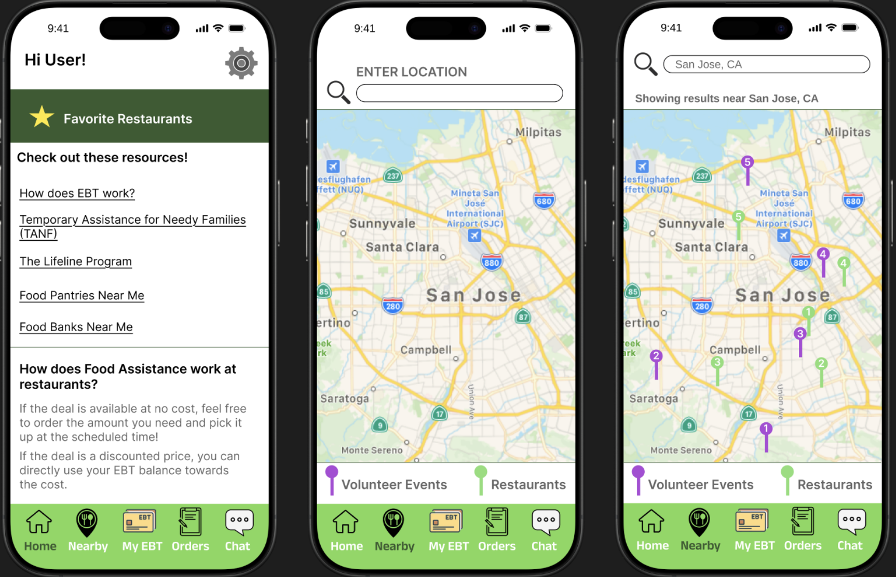
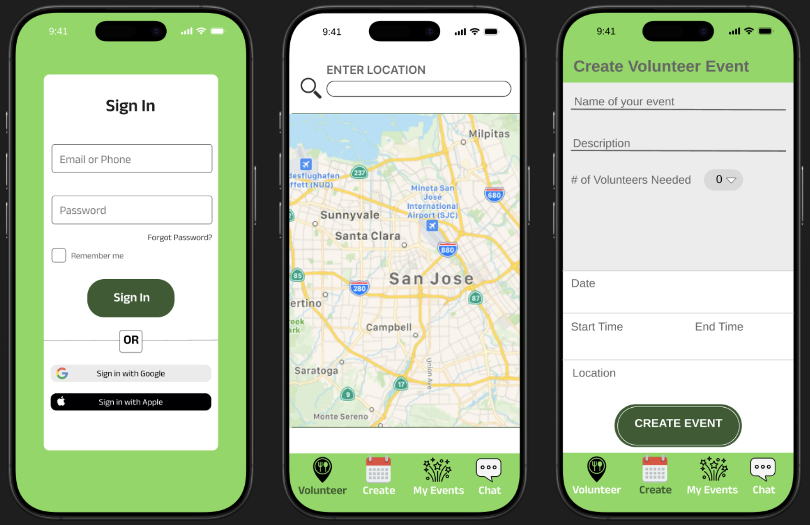
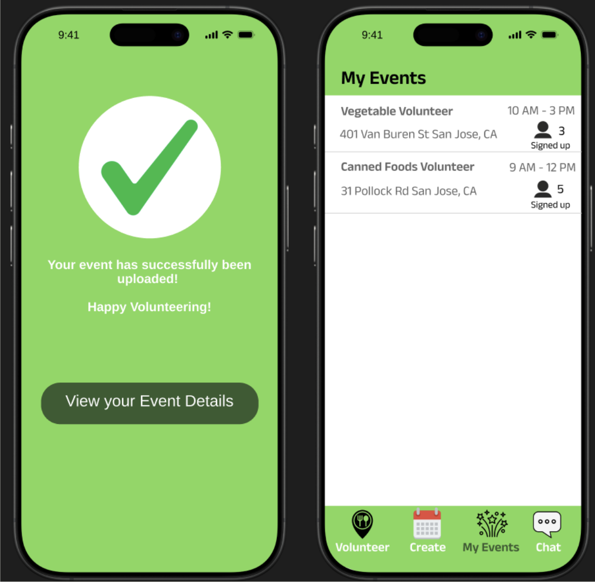

Following heuristic evaluations and user feedback, we refined the design to address usability issues and improve visual clarity. Below are the final UI flows, organized by core user tasks.
The onboarding, home screen, and food-finding experience were polished for clarity and accessibility. Notifications, maps, and listings are now more cohesive and intuitive to navigate.

The event creation flow was simplified and better structured for mobile users. Input fields are clear, feedback screens reinforce user confidence, and the experience is streamlined end-to-end.
 The messaging UI now features cleaner visual hierarchy, message timestamps, and improved legibility. This supports trust-building communication between users and food providers.